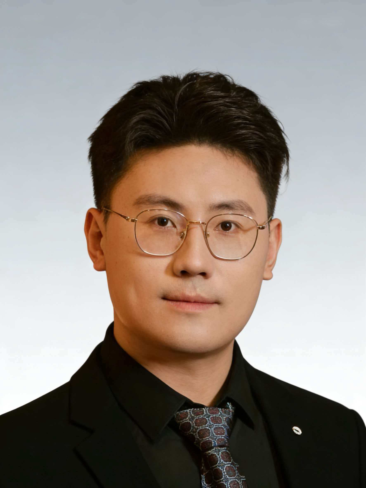

Yonggang Zhang (HKUST)
Home
|

|
Yonggang Zhang
Research Assistant Professor @ HKUST
Address: Hong Kong University of Science and Technology
Clear Water Bay, Kowloon, Hong Kong
E-mail:
zhangyg [at] ust.hk;
yonggang9412 [at] gmail.com
[Google Scholar]
[GitHub]
|
Biography
My research focuses on building trustworthy AI agents that can reason, learn, and adapt in complex real-world environments.
I study how foundation models can acquire reliable reasoning capabilities, learn from experience, and improve through principled feedback and self-improvement mechanisms.
My research spans three interconnected areas:
(1) Trustworthy AI Agents, (2) Reliable Foundation Models, and (3) Robust Machine Learning.
My long-term goal is to establish the foundations for intelligent systems that are both capable and dependable in real-world applications.
I am currently a Research Assistant Professor at the Hong Kong University of Science and Technology (HKUST), collaborating with
Prof. Yike Guo
(Fellow of IEEE and Royal Academy of Engineering).
Prior to joining HKUST, I was a Postdoctoral Fellow at Hong Kong Baptist University (HKBU), working with
Prof. Yiu-ming Cheung
(IEEE Fellow)
and
Prof. Bo Han.
I obtained my Ph.D. degree from the University of Science and Technology of China (USTC) in June 2022 under the supervision of
Prof. Xinmei Tian.
Research Interests
My research interests center on:
-
Trustworthy AI Agents:
reliable reasoning, agent self-improvement, feedback-driven learning, and trustworthy agentic systems.
-
Reliable Foundation Models:
LLM reasoning and alignment, model adaptation, uncertainty, and reliability of foundation models.
-
Robust Machine Learning:
robustness under distribution shifts, adversarial robustness, and reliable learning in imperfect environments.
Selected News
-
2026:
Our work
Conditional Equivalence of DPO and RLHF: Implicit Assumption, Failure Modes, and Provable Alignment
was selected as an ICML 2026 Spotlight.
-
2026:
Our works on
LLM self-improvement
and
knowledge-base question answering
were accepted to ICLR 2026.
-
2026:
I joined HKUST as a Research Assistant Professor.
-
2025:
Our work
Detecting Generated Images by Fitting Natural Image Distributions
was selected as a NeurIPS 2025 Spotlight.
|